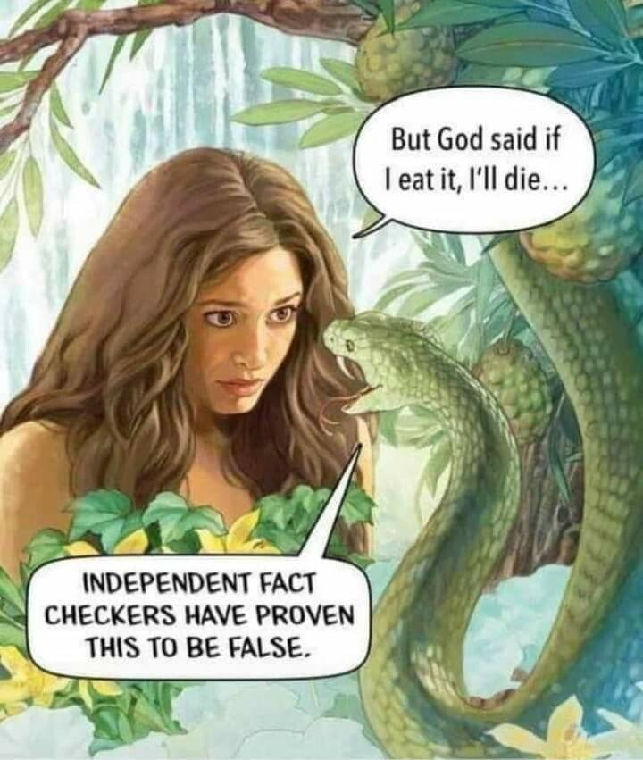
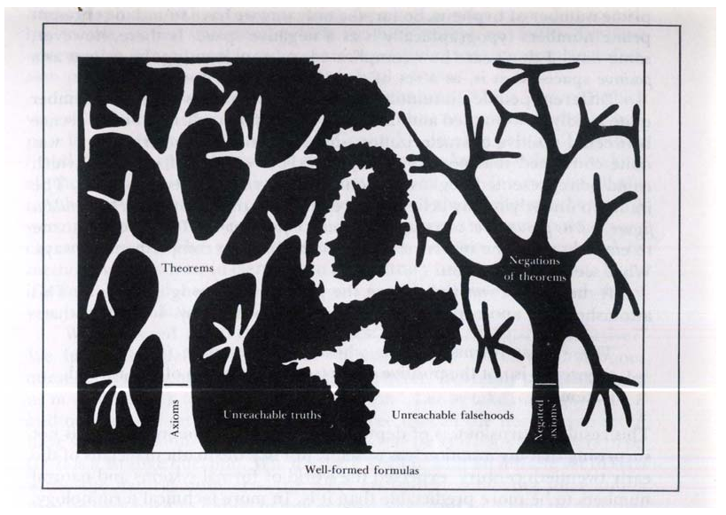

Philosophical Foundations Part 1B: The Nature of Truth and the Abyss
Table of Contents
- 1. Introduction to Truth
- 2. Definitions
- 3. The Information Compression Theory Of Truth
- 4. Evaluating Platonism
- 5. The Problems With Justified True Belief (JTB)
- 6. The Problem With The Correspondence Theory Of Truth
- 7. The Problems With The Pragmatist Theory Of Truth
- 8. The Consensus Theory Of Truth
- 9. The Meaninglessness of the Standpoint Theory of Truth
- 10. Theory Of Mental Representation
- 11. Known Vs Unknown Concepts
- 12. Unfalsifiable / Undecidable Concepts
- 13. Staring Into The Philosophical Abyss
NOTE: Most of what’s written on this page is out-of-date since my thoughts on truth changed after watching this debate: Platonic Dialog with Aarvoll on the Nature of Truth.
1. Introduction to Truth
Veritasium: The Illusion of Truth
- The Frequency of Patterns and Stimuli affects how true or false we judge things in the world.
- Cognitive Load
- Cognitive Ease
- Cognitive Difficulty
- The Mere Exposure Effect
Important: If it’s not possible for someone to know literally everything, then it’s not possible for there to be a single universal ends-all-be-all fact-checker for truth.
The best way for truth and fact-checkers to work in a society would be for the most dominant fact-checkers to cite the primary expert/institution/authority/knowledge/facts that they appeal to when determining the truth value of something.
Likewise, there should be several competing truth fact-checkers, similar to how it’s a good idea for there to be several competing products on the market, several competing currencies, or several competing reviewers/peer-reviewers. We’ve already established that it’s not possible for there to only be just one, so there has to be multiple ones. And it’s up to everyone in society to decide who they want to agree with.
2. Definitions
- Truth
- i
- True
- i
- False
- i
- Unknown
- i
- Mental Representation
- i
- Unfalsifiable
- i
- Undecidable
- The same thing as unfalsifiable, right?
- Unobservable
- i
- Information Compression Theory of Truth
- i
- Pragmatist Theory of Truth
- i
- Correspondence Theory of Truth
- i
- Consensus Theory of Truth
- i
- Justified True Belief
- i
- Statement
- i
- Proposition
- i
- Formula
- i
- Sentence
- i
- Hypothesis
- i
- Conjecture
- i
- If a claim is plausible, but there is no evidence for it, then the claim is a conjecture.
- Conclusion
- i
- Principle
- i
- The Abyss
- i
3. The Information Compression Theory Of Truth
i
To put it most concisely, the reason why objective truth does not exist is that it’s not possible to have absolute, omniscient knowledge of reality. Therefore, conscious minds can only have subjective, perspective-dependent models of that objective reality. No proposition can ever be truly be labeled as “objectively true” because it’s always possible to be wrong about that said propositions if further knowledge of reality invalidates that proposition’s truth value assignment.
Truth is essentially the same thing as knowledge, because whatever people know is what they will assert to be “true”.
A common theme among mastering different academic fields is to understand the finer details of something, such that the all the tiny, implicit details are made explicit and rigorous. Examples:
- For math, everything must be rigorous and verbose. one reason is to avoid assuming things that need to be proven
- In programming, telling instructions to the computer often requires lots of tiny steps we would never think about (video of robot trying to make a PB&J sandwich)
- When learning a foreign versus a natural language, one must be aware of lots of small details often overlooked by natives
- For physics, all small details must be considered when calculating physics problems, though they are often ignored in idealized models and situations used for teaching physics concepts.
3.1. Example: “The Sky Is Blue”
A common phrase that many people will utter for asserting the supposed obviousness of the objectivity of truth is “The Sky Is Blue”, but this is actually a great example for demonstrating how truth is all about information compression.
For one thing, the sky isn’t always blue. Sometimes, it has orange/sunset colors, sometimes it’s gray when it’s cloudy and raining outside, sometimes it’s pitch black at night, and it can even appear red during wildfires, yellow near hurricanes, or white if there’s nothing but clouds. Since Truth is knowledge compression, saying that “the sky is blue” omits the information that the sky isn’t always blue all the time, even if it may be the case that the sky is blue most of the time.
Furthermore, the vast majority of the world’s languages don’t make a native distinction between blue and green because the human eyes have fewer blue cones for detecting blue light within them, in comparison to the number of red cones. Many languages don’t even have a native word for “blue/green”. And to make things even more complicated, Russian also makes a native three-way distinction between green, light blue, and dark blue.
- Green = зеленый
- Light Blue = голубой (also incidentally the term for gay)
- Dark Blue = синий
So, Russians would say that the sky is “light blue” or “cyan”, instead of just “blue”, if they are making the most general, information-compressed statement about the sky’s color.
The two main takeaways here regarding the complexity of truth are: 1. truth exists at different levels of provided information, and 2. the specificity/ambiguity of language affects the truth values of propositions. If we insist that the statement “the sky is blue” is definitively and unquestionably true, then we are omitting important information about the sky and choosing to be willingly ignorant about it. The inability of the correspondence theory of truth to account for situations where a subject believes a proposition to be true when it’s actually false given more information about reality implies that the correspondence theory is not sufficient enough for understanding the true Nature of Truth.
With that all that being said, the actual best answer to what color the sky is that it depends on the location, the time of day, and the atmospheric conditions. It is ironic that “the sky is blue” is one of the most, if not the most, archetypical sentences in the English language for demonstrating things that should be obvious. Because if we think about the proposition and more specific terms, would be see that the sky is actually not always blue, and the word blue is a vulnerable to the Sapir Whorf Effect, depending on what words the language being used tire the proposition has for describing colors.
3.2. The Extent of Truth
Propositions can also be “mostly true”, “somewhat/kind of true/false”, or “mostly false”. In these situations, it is either the case that:
- Some of the components making up the proposition are true while the other components are false, or
- There is too much information compression of reality to the extent that the proposition model reality very inaccurately, or
- Both 1 and 2 to some extent each.
i
3.2.1. Bloom’s Taxonomy

3.3. An Example of Information Compression
Among the first conceptions of the Earth’s position in space was Ptolemaic system and epicycles. Further knowledge revealed that the Earth actually orbits the Sun, and the Heliocentric Model was formed. Later, the center of the Milky Way Galaxy was discovered, and it was realized that we live in an ever expanding, unimaginably huge universe.
Each of these different conceptions of Universe vary by their accuracy, but also by the amount of information gathered about objective reality that is compressed into mental models formed from sensory experience. Even if the Ptolemaic Model is clearly wrong with the modern knowledge that we now have about the Universe, it was formed during a time when people could only gaze at the stars and notice that the stars in the sky would vary depending on the time of day and time of year, so if that’s the only information we have to base our model of the Universe on, that model is still true according to that limited sensory experience of the Universe. When more information is gathered about the Nature of the Universe, the simpler model becomes false because we have more information to make a truth judgment that is more representative of reality.
3.4. A Second Example of Information Compression
3.5. Example Of False Beliefs Formed From Incomplete Knowledge Of Reality
A small sampling of all the inaccurate thoughts ever brainstormed in history is:
- The universe is controlled by a powerful all-mighty god?
- The universe revolves around the Earth?
- The universe is composed of earth, water, air, and fire?
- The species of the world developed according to creationism?
- The Earth is flat?
- The theory of scientific racism proposed by Europeans to justify segregation/discrimination/eugenics/colonization/etc?
- The brain is responsible for blood circulation and the heart is responsible for our thinking and thoughts?
- The bones in an embryo are the first structures to develop?
- The expansion of the universe is slowing down due to gravity?
- The ancient Pyramids in Egypt were built by tropic bears?
- The great dinosaur extinction was caused by a violent volcano?
- The best system to guarantee human rights is communism?
- Supernatural gods are responsible for the sun, moon, and every other unexplained phenomenon in this universe?
However, we must keep in mind that all these inaccurate beliefs were formed from incomplete models of reality.
4. Evaluating Platonism
4.1. Arguments Against Platonism
Arguments Why The Platonic Realm Does Not Exist:
- The Platonic Realm doesn’t have any explanatory power (this is debatable, I guess)
- Believing in the Platonic Realm is not necessary for explaining how we understand the world, if the models and the sensory data and reasoning that generates said models of objective reality are stored completely within systems of reasoning that exist within our own minds.
- If the Platonic Realm doesn’t exist physically, then where does it exist?
- Where is the empirical evidence that the Platonic Realm exists?
- Where is the empirical evidence that ontological primitives exists?
- Why does a Platonic Realm containing every possible patterns have to exist, when we can instead understand that patterns are information stored in the brain about the characteristics and relations about many different things (genes, mathematical structures, etc) that exist within the physical world?
- How do we have access to the Platonic Realm?
- Why do we have unequal access to all the propositions in the Platonic Realm?
- If there is a Platonic Realm, then why are so many situations where we can’t perfectly model natural phenomena?
- How would Platonists verify truth propositions under their theory of truth?
- How are the arguments in favor of the Platonic Realm any different from the fallacious Transcendental Argument for God (TAG)?
- If we should assume that there are aspects of reality that are not empirically observable (e.g. the Platonic Realm) without evidence for their existence, how is this any different from arguing that we should believe in an omniscient omnipotent God, when God is not empirically observable (under the most common definitions of “God”)?
- Believing in a Platonic Realm does not prevent an infinite regress of knowledge, since it’s actually an Inverse Homunculus Fallacy
- You don’t solve the problem of meaninglessness by attaching it to an ontology. You give terms meaning by grounding them in embodied experience.
It seems that believing in a Platonic Realm only creates more unanswered questions than it solves. Occam’s Razor ought to include that the Platonic Realm simply doesn’t exist.
4.2. Arguments For Platonism
Arguments Why The Platonic Realm Does Exist:
- It supposedly gives explanatory power for proving or disproving existential and universal propositions within certain frameworks.
- A Platonic Realm is necessary in order to prevent an infinite regress of knowledge.
- Godel’s Completeness Theorems allegedly affirm the existence of unfalsifiable and undecidable statements.
4.3. Arguments Why The Objectivity Or Subjectivity Of Truth Is Unfalsifiable
Arguments Why The Existence of the Platonic Realm Is Unfalsifiable:
- Neither side ever said that can definitively disprove the other’s claims.
- It is impossible to prove whether some statements are true or false, due to the nature of truth, and since human have limited knowledge of reality.
5. The Problems With Justified True Belief (JTB)
Justified True Belief doesn’t define what “true”, “justified”, or “belief” (knowledge) are.
i
6. The Problem With The Correspondence Theory Of Truth
“A proposition is either true, or it isn’t. And your model is flawed, or it isn’t”
Although the Correspondence Theory Of Truth makes intuitive sense, it quickly becomes problematic when multiple people are unable to agree on what is “true” or not. And if there are different plausible reasons for believing in one side’s truth claims over the other and vice versa, who’s to say which one is “objectively true”? It could also be the case that the people arguing are both wrong or that both sides are true and false in different ways.
When people disagree on whether something is “true” or not, that is because they both reached their conclusions via different subjective models of experience. This suggests that truth is not decided by “whether or not something corresponds to reality or not” since it cannot be the case that both debaters are both assigning their truth values according to whether the proposition corresponds to reality or not. Therefore, the more reasonable conclusion is that what each person considers to be “true” is decided by their subjective models of experience.
Relevant Reading: What is Subjectivity? - Blithering Genius
7. The Problems With The Pragmatist Theory Of Truth
Although AntiCitizenX’s video promotes the Pragmatist Theory of Truth in the last several minutes, this is misguided. If someone does not have enough information to make the best decision possible, they are not using the Pragmatist Theory of Truth to navigate themselves through life. What they are actually doing is they are using information compression to form the premises that are used in their decisions. Not everything that we gather about reality from our senses is the big picture of reality is. We often only have a very simplified understanding of reality for many different things.
We might make the wrong decisions because our understanding of reality isn’t large enough, but it’s better to say that when we do make mistakes, it’s because the model of reality that we have in our minds is not comprehensive enough, not merely because we didn’t know enough information about reality. Different truth judgments often result from people having levels of understanding and models of reality that vary by how detailed the models are.
Under this understanding of truth, the essential reason why “objective truth” doesn’t exist is because it’s not possible to create a hypothetical model of reality that has 100% accurate precision for all its details. Or in other words, it’s not possible to be omniscient and know everything there is to know about reality because that is a fundamental condition of being a subject (philosophical).
i
8. The Consensus Theory Of Truth
The Consensus Theory of Truth is …
The Consensus Theory of Truth cannot stand by itself since each person within the group of people (including the people who agree with the consensus) each arrived at their verdict via the Information-Compression Theory of Truth, which works on individual scales. Nonetheless, the Consensus Theory of Truth has popular appeal in many situations, especially when it’s most important that decisions should be made based on popular support. The Consensus Theory of Truth is often used in court systems and in informal situations that have a similar nature to deciding guilt verdicts.
8.1. “The Wikipedia Theory of Truth”

The Wikipedia Theory of Truth is that Wikipedia is more likely (but not guaranteed) to be correct than most opinions out there, because it was created by a consensus of dozens to hundreds or even thousands of well-educated people who tend to be smarter than the average person, and are often “experts” in their own fields, as they are members of Academia.
For January-November of 2021, this was more or less the theory of truth that I operated under until I read Blithering Genius’s essay on Why Most Academic Research Is Fake. At that point, I realized that Wikipedia can’t be trusted because Academia is not infallible. In fact, Academia is rigged and as susceptible to ideological biases as any other person out there. When I went through this phase, I was probably the most leftist/humanist that I had ever been at any other point in my life, but I’m glad that I snapped out of very quickly.
9. The Meaninglessness of the Standpoint Theory of Truth
Slavery and the Holocaust are some of people’s favorite sacred moral narratives. When people are abusing the The Rhetoric of Exploitation, they will often compare injustices to slavery or the Holocaust. When people who oppose these comparisons hear them, they will often respond by saying “That’s offensive to Holocaust Survivors or Actual Slaves”. But if we’re going to take the Standpoint (STFU) Theory of Truth for granted, then there are plenty of examples for showing how ridiculous it is. If you look hard enough, you can find an example of someone who went through a heinous tragedy who compares a different phenomenon to the hardship that they experienced:
- Example of a slave who claimed that taxation is worse than slavery: Former Slave: Frederick Douglass
- Example of a Holocaust survivor who compared modern slaughterhouses to the Holocaust: Vegan Holocaust Survivor: Alex Hershaft
- Example of a Holocaust survivor who compared the COVID-19 lockdowns to the Holocaust: 92 year-old Holocaust survivor compares COVID response to Nazi Germany.
- Example of a Holocaust survivor who compared Islamic indoctrination as using the same indoctrination tactics used in Nazi Germany: [I can’t remember the name of the person who made this comparison, but if I find it, I’ll post it here.]
- Example of a Holocaust survivor who opposes critical race theory: https://www.foxnews.com/media/holocaust-survivor-endured-nazi-medical-experiments-opposes-critical-race-theory-indoctrination
The point of making this list was to show that it’s rather meaningless to compare perceived hardships to sacred moral narratives like slavery or the Holocaust because dozens of other perceived forms of oppression can be compared to these sacred moral narratives as well. Conversely, it’s equally meaningless to attempt to use standpoint theory to argue against such comparisons since we can always find someone who went through the actual hardships who agrees with the comparison.
To quote from Blithering Genius on Standpoint Theory:
Standpoint theory is basically the belief that marginalized groups have special insight – their experiences are more truthy. In other words: complete bullshit. It isn’t a theory of knowledge. It’s a rhetorical trick to “win” a debate by retreating into the swamp of relativism and solipsism. It’s like saying “You can’t see your privilege because you are a white male, so let me tell you about it”. Or, in other words, “Listen and Believe”. Or in other other words, STFU. ― Blithering Genius
Standpoint Theory has gotten so ridiculous that the United States Holocaust Memorial Museum has insisted that other traumatic events cannot be compared to the Holocaust, because in their moralist worldview, only the Holocaust can be the worst event to have ever happened in human history, mainly because the Holocaust is their favorite thing to virtue-signal about.
The United States Holocaust Memorial Museum unequivocally rejects efforts to create analogies between the Holocaust and other events, whether historical or contemporary. That position has repeatedly and unambiguously been made clear in the Museum’s official statement on the matter – a statement that is reiterated and reaffirmed now.
The Museum further reiterates that a statement ascribed to a Museum staff historian regarding recent attempts to analogize the situation on the United States southern border to concentration camps in Europe during the 1930s and 1940s does not reflect the position of the Museum.
The Museum deeply regrets any offense to Holocaust survivors and others that may have been engendered by any statement ascribed to a Museum historian in a personal capacity.
This poses a problem for other moral ideologues who insist that their favorite thing to virtue-signal about can and should be compared to the Holocaust. In any case, since standpoint theory hardliners will argue and virtue-signal against each other about their sacred moral narratives, it’s all just more evidence that standpoint theory is not a meaningful or epistemically sound theory of truth.
10. Theory Of Mental Representation
In reality, there is no language associated with any objects or concepts. Language are a component of mental representations that make them easier to understand.
It always feels very interesting to think about concepts without language. It makes them feel more abstract and sometimes helps one think better.
i
11. Known Vs Unknown Concepts
i
12. Unfalsifiable / Undecidable Concepts
Unfalsifiable: Not able to be proven false, but not necessarily true.
A conjecture is undecidable, relative to some formal system, if neither it or its negation can be proven within that system.

13. Staring Into The Philosophical Abyss
There is ultimately no objective grounding for anyone’s beliefs, values, etc. Whether someone strongly affirms life (e.g. repromaxxers) or strongly disdains life (e.g. efilists and antinatalists), support for either position can ultimately only boil down to personal preferences, and that goes both ways. Such is the nature of the Abyss.
[I will elaborate more on this in the future, but I’m always busy, and it takes time to write stuff]
Antinatalists and Efilists might argue that the non-existence of life would eliminate any need to debate this topic, but that’s irrelevant because: 1. that’s not the reality that we currently live in, 2. concluding that life should not exist on hedonistic and altruistic grounds relies on unquestioned assumptions, and 3. if they’re arguing that life should not exist, their argument is ultimately based on how they don’t want life to exist. Their preference for Antinatalism or Efilism is ultimately based on personal preference, just like how life-affirmers affirm life based on personal preference.